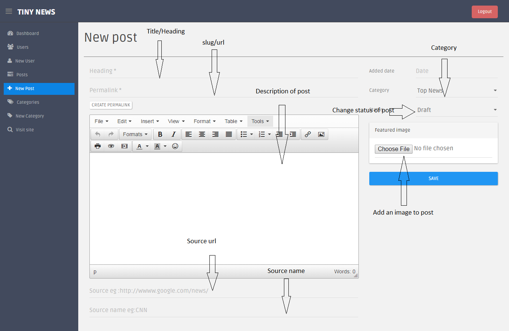

Created: July 22th, 2015
By: weblogtemplates
Thank you for purchasing my script. If you have any questions that are beyond the scope of this help file, please feel free to contact me via codecanyon contact form. Thanks so much!
Develop a tinynews app using cordova/phonegap. It is built using angularjs,Ionic framework and php(Yii 1.1)
In this tutorial we will help you to install news php script and creating an app using cordova/phonegap.
Before installation create and import demo database using this simple turorial.
From downloaded files open this file inside script folder. 'protected/config/config.php'
Config file may look like as shown above. Change database host, database name, database username and database password that you created in mysql installation wizard.
Next open file 'protected/config/params.php'
site_url is the domain name or folder where script is installed. It should be http://domain.com or http://domain.com/folder . Don't add trailing slash here
static_path should be either http://domain.com/static/. So it should be site_url+'/static/'.
Other variables like site_name, site_title, site_description can change according to youur needs.
API_KEY will be explained in the push notification section.
After making necessary changes upload all files inscript folder to server and http://domain.com/site/install in a browser and create first admin as shown below.
If installation completes successfully you can see login page of admin with success.
Login to admin using this url http://domain.com/newadmin/default/login .
After login to admin panel take add category. Add 100pxx100px iamges to categories for best look and feel.
After login to admin panel take new post from left side to add a new news/post.
Creating user/admin
Url -- http://domain.com/api/news/posts/
Parameters : offset and category(Optional)
Offset should be 0,1,2 etc. 0 means it will load first 10 posts, 1 means 11 to 20 posts.
If you add a category id along with above url it will load posts in that particular category.
Url -- http://domain.com/api/news/search/
Parameters : offset and query(Optional)
Offset should be 0,1,2 etc. 0 means it will load first 10 posts, 1 means 11 to 20 posts.
If you add a query paarameter it will fetch posts with search condition.
Url -- http://domain.com/api/news/category/
Lists all categories
Url -- http://domain.com/api/news/post/
paramets : id - post id
Installing android SDK is the first step in creating an android app using cordova/phonegap. You can easily install sdk by downloading it from here. After finishing it we need to install node.js, npm and cordova/phonegap.
Here it is tutorial link for installation and set up.
Follow this tutorial to install cordova using The Command-Line Interface
Above tutorial will definitly help you to install node.js and npm utility which will ease cordova installation.
If you are using a windows machine "C:\>npm install -g cordova" will install cordova in your machine.
"cordova create hello com.example.hello HelloWorld" It will create a folder "hello" inside your current directory and will create an app with package "com.example.hello".
After installation just follow above tutorial to add required platforms to your android app.
For most of cordova based tutorial for installation you can follow this good documentation from cordova website.
Commands for creating app - You should run this using command line.
Downloaded zip files contains app and documentation folder. In app folder there is another folder named "www". We need to replace it with the generated "www" folder inside the app that you created using cordova.
These are the plugins that required for the complete working of this app.
After creating app and replacing "www" files add above mentioned plugins. You need to add these plugins one by one at a time.
Open the app folder inside the downloaded files. And take "/js/app.js" in a text editor and search for this code.
Change weburl of api. http://domain.com/api/ where http://domain.com/ where news php script installed and add simple 'api/' along with it.
Change App Name, url and error message where there is no posts to load.
You can also change "to email", email subject in contact form.
For proper working of android app push notification, we need create an app in Google Console and get project number from here.
Google Console->Select App->overview->Project Number: at top of page
Along with adding project number we also need to add API_KEY in settings section of news script.
In above created project enable gcm as shown below.
Create a new server key and add it to script settings section.
We can manually send push notification to users those who installed app.
Easily change app header color/buttons by changing a single constant in config section. Change "AppColor" in "Color" config section from available options. "light, stable, positive, calm, balanced, energized, assertive, royal, dark" that will you to quickly change entire app color with a single click.
First step to show admob ads in your app is to add this plugin 'cordova-plugin-admobpro' , if you already added above plugins don't need to add it again.
In 'js/app.js' page change admob interstitial and adbanner id's with your own admob codes.
And you can find example ways to show ads in a page from "js/controllers.js" controller "AdmobCtrl".
$scope.showInterstitial = function(){
if(AdMob) AdMob.showInterstitial();
}
document.addEventListener("deviceready", function(){
if(AdMob) {
// show admob banner
if(ConfigAdmob.banner) {
AdMob.createBanner( {
adId: ConfigAdmob.banner,
position: AdMob.AD_POSITION.BOTTOM_CENTER,
autoShow: true
} );
}
// preparing admob interstitial ad
if(ConfigAdmob.interstitial) {
AdMob.prepareInterstitial( {
adId:ConfigAdmob.interstitial,
autoShow:false
} );
}
}
if(ConfigAdmob.interstitial) {
$scope.showInterstitial();
}
});
Above code will show a banner and Interstitial ad. Remove interstitial or banner id code if you don want to show ads.
document.addEventListener("deviceready", function(){
if(AdMob) {
// show admob banner
if(ConfigAdmob.banner) {
AdMob.createBanner( {
adId: ConfigAdmob.banner,
position: AdMob.AD_POSITION.BOTTOM_CENTER,
autoShow: true
} );
}
}
});
$scope.showInterstitial = function(){
if(AdMob) AdMob.showInterstitial();
}
document.addEventListener("deviceready", function(){
if(AdMob) {
// preparing admob interstitial ad
if(ConfigAdmob.interstitial) {
AdMob.prepareInterstitial( {
adId:ConfigAdmob.interstitial,
autoShow:false
} );
}
}
if(ConfigAdmob.interstitial) {
$scope.showInterstitial();
}
});
For more options follow this admob plugin tutorial.
After finishing these tasks take a build of your app and install it in your mobile device.
Inside app you can find html files here "www/templates".
Inside app you can find js files here "www/js".
js/controllers.js -- all controller files in app
js/router.js -- routers can be found here
js/data.js -- all factories -- functions for accessing data from server
Thanks for using this script.